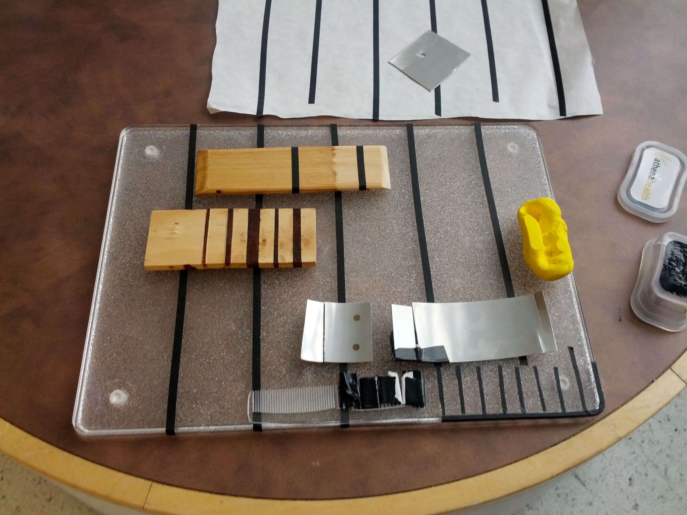

- 
-

-

Kitchenware for Low Vision
John and Lauren, an older adult couple living in the suburbs of Boston, count themselves lucky for everything they have. Family. Friends. Independence. Through shared meals, conversation, and being put to work around the house, we worked with them to identify and prioritize ways our three-person engineering team could help them continue to age in place. With multiple back and knee surgeries each, there were plenty of challenges in the built environment. But maintaining their ability to cook and host were the key to maintaining their happiness, not doing chores around the house. So we focused on kitchenware that anyone could use, especially Lauren. Lauren's deteriorating vision due to macular degeneration was slowly, but surely forcing her out of "her kitchen, her kingdom."
Project Info
- Team Size: 3
- Collaborators: John and Lauren Debeck (pseudonyms)
- Spring 2014